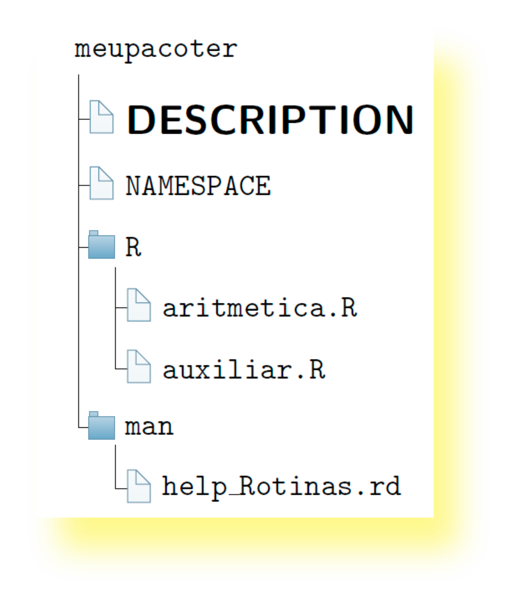

Como desenvolver o primeiro pacote R
Selo DC

Livros em desenvolvimento
Pacotes estatísticos publicados
- SMR (BATISTA; FERREIRA, 2014)
- midrangeMCP (BATISTA; FERREIRA; OLIVEIRA, 2020)
- MCPtests (BATISTA; FERREIRA; OLIVEIRA; SANTOS, 2020)
- TVMM (ALVES; FERREIRA; BATISTA, 2020)
- cppcor (RIBEIRO; BATISTA; MARTINS; OLIVEIRA, 2020)
Pacotes em desenvolvimento
O que é necessário?
- Conhecer o ambiente R (R básico)
- A linguagem R instalada:
- RStudio (Opcional) https://rstudio.com/
- Rtools (Windows) https://cran.r-project.org/bin/windows/Rtools/
\(\LaTeX\)https://miktex.org/download- Alternativa: instalar o pacote tinytex
Conhecendo a estrutura básica de um pacote
Criando um pacote com o RStudio
aritmetica.R
# Operacoes basicas da matematica
aritmetica <- function (a, b, op) {
# op: divisi, multi, soma, subtra
if (op == "divisi") x <- divisi(a, b)
if (op == "multi") x <- multi(a,b)
if (op == "soma") x <- soma(a,b)
if (op == "subtra") x <- subtra(a,b)
return(x)
}
auxiliar.R
soma <- function (a, b) { # Soma
calculo <- a + b
return(calculo)}
subtra <- function (a, b) { #Subtracao
calculo <- a - b
return(calculo)}
multi <- function (a, b) { # Multiplicacao
calculo <- a * b
return(calculo)}
divisi <- function (a, b) { # Divisao
calculo <- a / b
return(calculo)}
Local para inserir aritmetica.R e auxiliar.R
Editando o DESCRIPTION
Arquivo DESCRIPTION
Package: meupacoter
Type: Package
Title: Funcoes Aritmeticas Basicas
Version: 1.0
Date: 2022-11-18
Author: Ben Deivide
Maintainer: Ben Deivide <ben.deivide@ufsj.edu.br>
Description: Este pacote realiza operacoes aritmeticas basicas utilizando dois numeros.
License: GPL (>= 2)
Encoding: UTF-8
RoxygenNote: 7.1.2
Editando o NAMESPACE
Arquivo NAMESPACE
exportPattern("^[[:alpha:]]+")
Importante
- O que nós vamos fazer é deletar o arquivo NAMESPACE
- Vamos deixar para que o pacote
roxygen2gere-o.
Configurando o roxygen2
Criando a documentação básica do pacote
Estrutura da documentação
\name{meupacoter-package}
\alias{meupacoter-package}
\alias{meupacoter}
\docType{package}
\name{aritmetica}
\alias{aritmetica}
\title{Operacoes Matematicas Basicas}
\description{
O pacote resolve operacoes como: soma, subtracao, divisao e multiplicacao.
}
\usage{
aritmetica(a, b, op)
}
\arguments{
\item{a}{primeiro numero}
\item{b}{segundo numero}
\item{op}{operacao matematica}
}
\details{
A função \code{aritmetica} realiza as quatro operacoes basicas. A opcoes para o argumento
\code{op} sao "soma", "divisi", "multi", "subtra"
}
\examples{
aritmetica(8, 4, op = "divisi")
}
Usando o roxygen2 em aritmetica.R
Estrutura da documentação pelo roxygen2
#' Operacoes Matematicas Basicas
#'
#' \code{aritmetica} resolve operacoes como: soma, subtracao,
#' divisao e multiplicacao.
#' @param a primeiro numero
#' @param b segundo numero
#' @param op operacao matematica
#' @return A função \code{aritmetica} realiza as quatro operacoes basicas. A opcoes para o argumento
#' \code{op} sao "soma", "divisi", "multi", "subtra"
#' @examples
#' # Loading package
#' library(meupacoter)
#' aritmetica(8, 4, op = "divisi")
# @import "nomes de pacotes importados"
# @importFrom "Pacotes" "funcoes"
#' @export
aritmetica <- function (a, b, op) {
# op: divisi, multi, soma, subtra
if (op == "divisi") x <- divisi(a, b)
if (op == "multi") x <- multi(a,b)
if (op == "soma") x <- soma(a,b)
if (op == "subtra") x <- subtra(a,b)
return(x)}
Organizando os arquivos
- Antes de compilarmos o pacote, vamos excluir o arquivo NAMESPACE, e todos os arquivos ./Man/~.Rd;
- O diretório do pacote ficará assim:
Atualizando o pacote com o roxigen2
Checando o pacote
Submetendo ao CRAN
Obrigado!
Sugestões, perguntas, críticas…